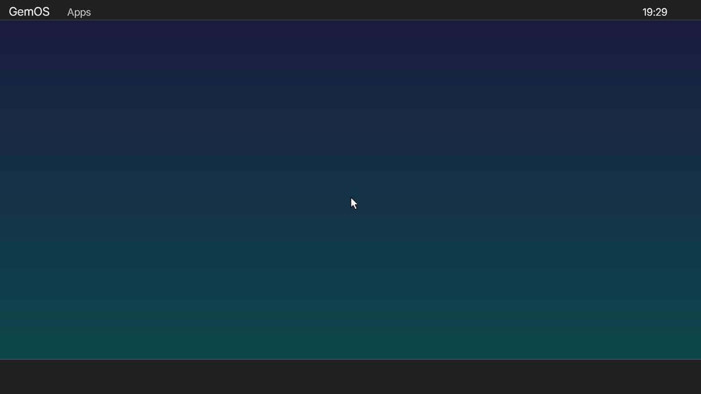

Boot chain
Own stage 1 + stage 2, A20, protected mode, kernel entry.
GemOS
A from-scratch 32-bit operating system for x86 with its own bootloader, kernel, GUI stack, scheduler, filesystem and a real Ring 3 transition already running practical userland apps.
GemOS is not trying to be flashy. It is trying to be technically coherent, calm to use and honest about what is done versus what is still in transition.
Project
GemOS is a classic desktop-style operating system built end-to-end: own boot chain, protected-mode bring-up, memory management, graphics, input, filesystem, scheduler, window manager and now real isolated userland applications.
The point is not novelty for its own sake. The point is to build a system that earns each new layer without throwing away the working one underneath.
Screenshots

Current state
Own stage 1 + stage 2, A20, protected mode, kernel entry.
IDT, ISR/IRQ, PIC, PIT, RTC, heap, paging, scheduler and serial debug.
VBE LFB, page-flipped rendering, PS/2 keyboard and mouse, TrueType text.
Window manager, topbar, dock, menus, focus routing and window decorations.
ATA PIO and GemFS with working read/write paths and seeded userland binaries.
Ring 3, separate CR3 per process, TSS/esp0 updates and fault containment.
Userland owns app state and render logic; kernel hosts the window and surface.
UTERM and About are real userland apps; TextEdit is in active bring-up.
Architecture
Current rule
Applications
First practical userland app. Exercises input, output, focus, fault containment and hosted-window lifecycle.
Small informational app with periodic updates and a clean, low-boilerplate hosted-app pattern.
Current bring-up target for real text editing: document state, multiline render, caret movement and dirty tracking are already landing.
Build
make all
make run
# debug
make debug
i686-elf-gdb build/kernel.elf
target remote :1234Tooling
Roadmap
Not now
Links
The best quick technical entry point for the repo.
Open READMEArchitecture notes, build/debug guidance and milestone context.
Open WikiBoot chain, kernel, drivers, apps, userland and docs all live in one place.
Open Repository